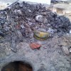

Într-un bătrân bloc dintr-un cartier muncitoresc bucureştean, nea Costică instalatorul munceşte de zor la desfundarea canalizării. “Ţevile astea sunt de vârsta mea şi n-or s-o mai ducă mult. Lumea e nesimţită, aruncă toate mizeriile în WC în ziua de azi”, îşi zice el scârbit în timp ce scoate al treilea şomoiog de zdrenţe ude şi puturoase din gaura de fontă. Molcoma activitate îi este perturbată de vocile ascuţite ale unui cuplu care se ceartă. Nea Costică se grăbeşte să se spele pe mâini şi să iasă la a şasea binemeritată pauză în holul blocului. Ce să-i faci? Izolarea fonică are tot 50 de ani, ca şi ţevile, iar telenovelele cu vecini bat la puncte orice producţie marca Acasă TV.
Instrucţia conjugală
“Ăştia’s Nelu şi Maricica de la unu”, murmură instalatorul cu un aer cunoscător, în vreme ce îşi aprinde tacticos o ţigară.
- M-am săturat! se aude un glas ascuţit de femeie. Gunoiul nu-l duci, la piaţă nu mergi, covoare nu baţi, chiuveta n-o repari, da’ ce Dumnezeu faci tu în casa asta? Nici măcar să-ţi strângi hainele după tine nu eşti în stare! Poftim, izmene azvârlite peste tot!
- Alea nu sunt izmene, femeie! E uniforma mea din armată. Habar n-ai tu câte decoraţiuni am strâns eu cu uniforma asta. Că dacă mă lăsau tata şi partidu’, mă făceam militar de carieră. Acu’ mi-ar fi dat şi mie mâna să ies în stradă şi să bat cu pumnii în poarta Cotroceniului să-mi cer pensia specială. Nu găseai altul mai bun în unitate la …
- Fir-ar ale dracului de poveşti din armată, că dacă mai aud o dată de afurisita aia de unitate mă duc şi dau foc la tot Ministerul Apărării. Ai fost şi tu un amărât de răcan ca toată lumea de pe vremea aia şi de treizeci de ani nu mă mai slăbeşti cu isprăvile tale de vitejie.
- Da’ ce-ţi mai plăcea când îţi trimiteam carte din armată şi te fandoseai la toate muierile din sat că te curtează bunătate de fecior în uniformă. Uite colea frumuseţe de straie. În ziua de azi nu se mai fac d-astea nici să dai cu tunu’. Numai chinezisme şi turcisme, peste tot.
- Pune mâna de ţi le strânge şi le aşază la loc în şifonier că altfel te las fără ele! Pe urmă duci gunoiul şi cobori să iei pâine că altfel o să mâncăm răbdări prăjite şi poveşti de cătănie.
- Ia mai slăbeşte-mă cucoană că nu m-ai câştigat la belciuge! Io te-am luat pe tine sau tu m-ai luat pe mine? Că doară n-a ajuns să cânte găina la mine în bătătură.
- Pe cine faci tu găină mă? Las’ că-ţi arăt eu ţie armată! Dau io jos milităria din pod.
Secunda fatală a gloriosului trecut
În scara blocului s-a lăsat tăcerea. Nea Costică îşi striveşte mucul de ţigară sub talpă, îşi suflecă mânecile cu un gest reflex inutil şi se întoarce agale în subsolul împuţit. Mai înjură încă o dată printre dinţi lipsa de civilizaţie a locatarilor, apoi se apucă din nou să meşterească la canalizarea înfundată. “Tot nu s-au potolit mahalagii”, comentează ca pentru sine când aude deasupra capului zgomot de uşi trântite, apoi un prelung urlet deznădăjduit.
“Na, că iar a mai tras vreunu’ apa şi mi-a îndesat porcării pe ţeavă”. Instalatorul scobeşte adânc în fosă, de unde trage afară o cârpă amorfă, de care atârnă câteva bucăţele de metal. O despătureşte curios, ridicând-o în lumina becului chior. “Tii! Acu’ chiar că i-a făcut-o muierea dracului”, chicoteşte el amuzat, apoi aruncă bucata de cârpă în grămăjoara deja formată la picioarele lui.
Din uşă se aude vocea piţigăiată a femeii de serviciu:
- Nea Costică, merge treaba? Că am venit să iau gunoiul. Da’ ce păcatele mele e ăsta? Un basc militar cu tot cu insigne? Doamne apără şi păzeşte, ce mai bagă oamenii în closet!
Menţiune: poveste bazată pe o întâmplare reală.


{kind=link}
{kind=link}
se cam alege praful de tot si de toate odata cu trecerea timpului nu? faza e ca dupa o virsta oamenii traiesc doar pentru si prin amintiri..
Comments on this entry are closed.